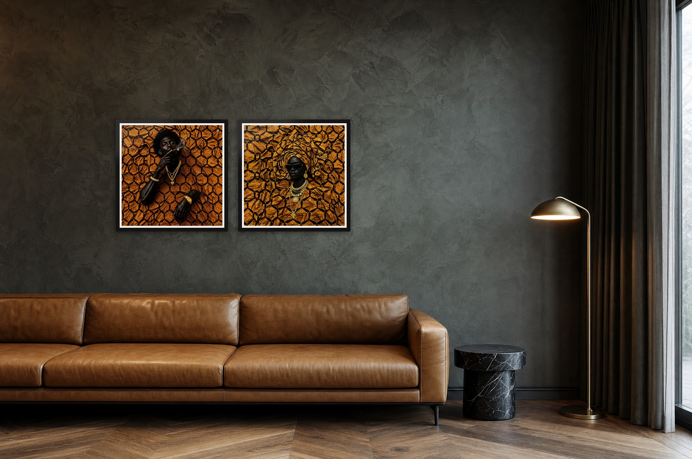
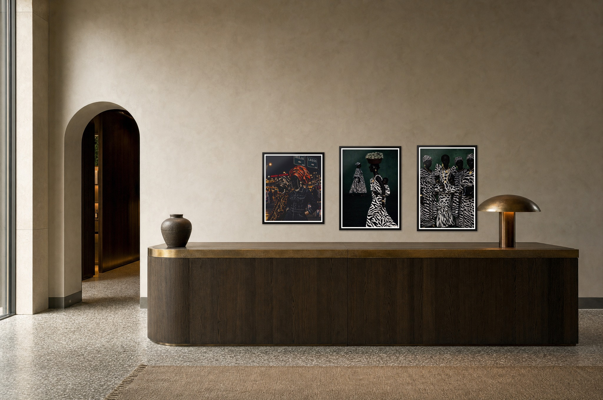
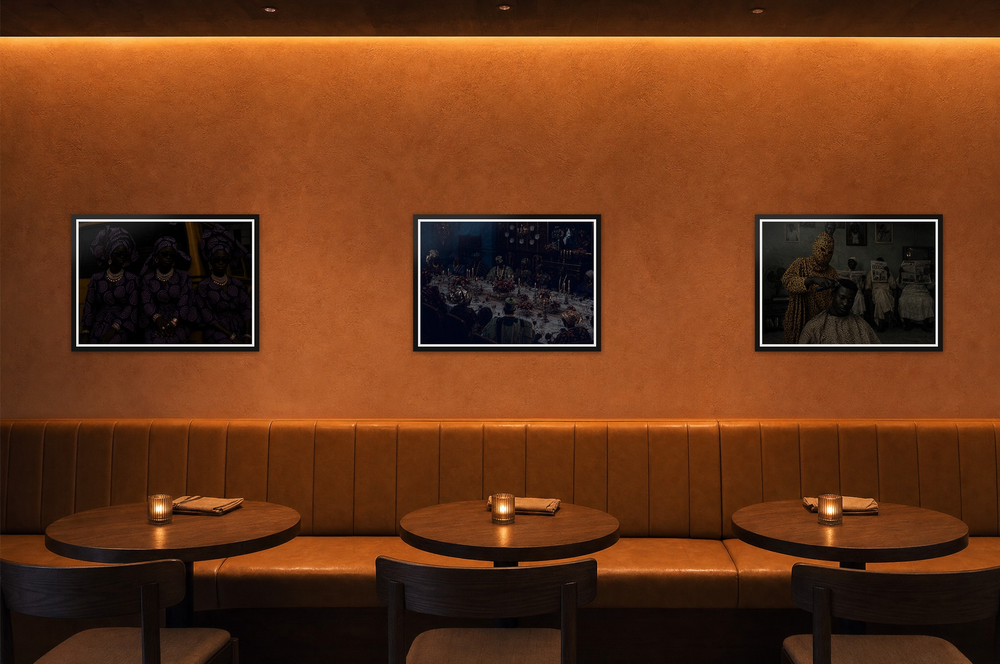
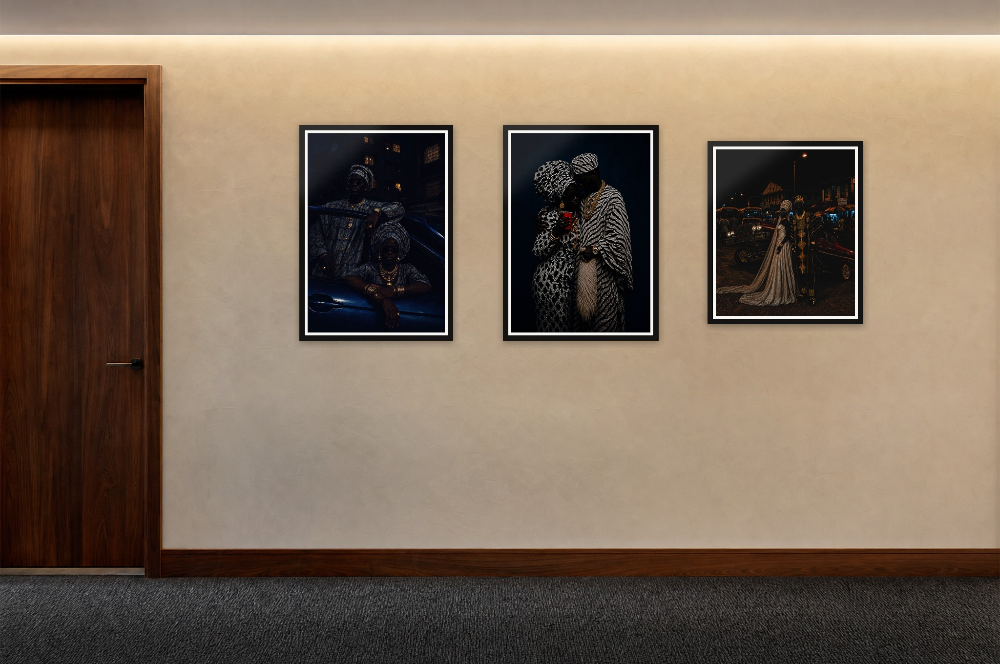
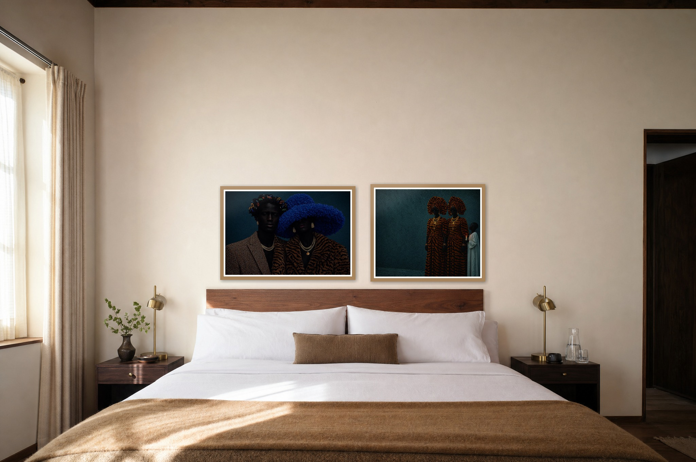

Selling Fola's work to hotels, restaurants and members' clubs.
A plan for the first ninety days, the assets that go with it, and the numbers still to confirm.
Prepared 11 September 202629 works · editions of 15Amsterdam · London
The short version
Most of the raw material already exists. The Ferm Living deck proved Fola can present the work in an interiors language, the prints page already groups the collection by room, and the certificate and QR verification pages exist. What was missing was a trade-facing offer, a specification page, and the work shown at true scale in hospitality settings. Those are now made and linked below.
The selling itself is a footwork job. Independent restaurants are won by walking in with one framed A2. Hotel groups are won through the design studio or art consultant who specifies the fit-out. Both are won by timing: art gets bought at refurbishment and opening, so the approach lands about three months before doors open.
Five renders, each a straight-on elevation with the real prints composited at true scale in black or oak frames. The rooms are generated, the artworks are the actual files, so what a buyer sees is what ships.

Hotel lobby loungeDrowned (Kehinde) and Drowned (Taiwo), A1 square pair, black frames, 638 mm each, centre line 1500 mm.

ReceptionCity Girls, No VC, Sisterhood. A1, black frames, run of three, 150 mm apart.

Restaurant banquette wallSaturday Function, We Give Thanks, Life of a Masquerade. A1 landscape, black frames, one above each table.

Guest corridorOne Vow, Anniversary, State of the Union. A1, black frames, 200 mm apart, centre line 1450 mm.

Guest roomBlack Excellence and Elders Guidance. A1 landscape, natural oak frames, 120 mm above the headboard.
Who buys, and how to reach them
Three routes, three different doors.
Venue
Who decides
How to approach
When
Independent restaurant, café, small hotel
Owner or general manager
Walk in on a quiet afternoon with one framed A2 and the printed lookbook. Ask for the owner by name.
Any time; best in the month after a refit or a new menu launch
Boutique hotel group, design-led restaurant group
The interior design studio or art consultant on the fit-out, then FF&E procurement
Find who designed a space you admire, pitch the studio by email with the lookbook, follow up by phone.
Three months before an opening or refurbishment
Members' clubs, West African and Caribbean hospitality, Black-owned venues
Founder or creative director
Warm introduction through Fola's network, then a rotating-show offer. This is where the subject matter lands hardest.
Ahead of a season or a cultural moment
Track openings and refurbishments through Hot Dinners, The Caterer, Dezeen and Instagram. Keep a target list of twenty venues with the decision maker, the design studio and the trigger event.
The offer
Start with a wall, not a contract.
Lowest commitment
The rotating show
Six to eight works hung for three to six months at no cost. Each piece carries a small QR card to its edition page. Works sold from the wall earn the venue a commission. Covered by a short loan agreement.
Buy outright
Editions, framed and delivered
Editions of fifteen at A1, A2 or A3, signed and numbered, with a certificate. Trade pricing from three works. Framing, glazing and installation handled end to end.
Site-specific
Commission or licence
Mural scale for a lobby, or forty guest-room prints. Editions of fifteen cannot serve that, so hospitality runs are made under a separate licence. This protects collector edition value.
Sheet
Millimetres
Retail, unframed
Trade, 3+ works
A1
594 × 841
£500
£375
A2
420 × 594
£400
£300
A3
297 × 420
£300
£225
Retail prices are the current shop prices. The trade column is a proposed 25% and needs Fola's sign-off before it goes to anyone.
Assets
What exists, what is still to make.
Trade lookbook DoneSixteen pages: foreword, artist, three ways in, the five rooms, five in-situ plates, specification, contact. Regenerated from the prints page data, so new works can be added.
In-situ renders DoneLounge, reception, restaurant banquette, corridor, guest room. Real print files composited at true scale.
Specification and price sheet In the lookbookSizes, framing, glazing, fixings, lead time, trade pricing, edition and certificate, process disclosure, terms. Worth pulling out as a single A4 page for procurement.
AI disclosure for trade In the lookbookStated on the foreword, the artist page and the specification page. Also add it to the quote template.
Outreach email and two follow-ups DoneVenue sequence (day 0, day 5, day 14) plus a design-studio variant of the first email, with sending notes. Read the drafts.
Loan agreement for the rotating show To makeDuration, insurance, who hangs, commission on sales made from the wall, what happens if a piece sells.
Target list To makeTwenty venues with decision maker, design studio and trigger event. A spreadsheet is enough.
Trade page on the site To makeA quiet page at /trade with the lookbook, the spec sheet and a contact form. Not in the main navigation.
Physical sample To makeOne framed A2 to carry into restaurants, plus ten printed copies of the lookbook.
The first ninety days
A sequence, in order.
Confirm the numbers with FolaTrade discount, framing and glazing spec, lead time, rotating-show commission. See the list at the end of this page.
Print the sample and the lookbookOne framed A2 (Sisterhood or No VC, they read from across a room) and ten copies of the lookbook.
Build the target listTwenty venues. Ten independents you can walk into, five design studios, five warm introductions.
Walk-ins, week two onwardTwo independents a week with the framed sample. Offer the rotating show first.
Studio emails, week two onwardFive design studios, lookbook attached, follow-ups at day five and fourteen.
Land one rotating show by day forty-fivePhotograph it properly. It becomes the case study on the trade page and in the next edition of the lookbook.
Review at day ninetyWhich route produced meetings, which produced sales. Double down on that one.
Watch-outs
Where this goes wrong, and how not to let it.
Print quality at scaleA July customer complaint named hands and currency in a large print. Proof every hospitality order at final size before it ships, and steer venues away from the highest-risk pieces at A1.
DisclosureSay AI-assisted before the buyer asks. It is in the lookbook three times; it also belongs in the quote and the certificate.
Editions versus volumeA hotel wanting forty prints will exhaust an edition of fifteen. Use the licence route, never the edition.
Fit-out compliancePublic spaces will ask about glazing and fixings. Acrylic glazing and security hangers as standard answers that before it is asked. Fire ratings apply to frames and mounts in some fit-outs; ask the studio what they need.
LoansA rotating show without a loan agreement is a gift. Insurance, duration and commission in writing, every time.
Payment50% deposit on order, balance on delivery. No exceptions for a first order.
To confirm with Fola
Numbers in the lookbook that are proposals, not decisions.
Trade discount of 25% on three or more works.
Frame spec: solid timber, black or natural oak, 22 mm face. Acrylic glazing as standard, museum glass on request.
Lead time of three to four weeks framed.
Rotating show: three to six months, commission to the venue on sales made from the wall (rate not yet set).
Square works printed on a square-trimmed sheet at the A-size short edge. The prints page shows them fitted inside A-series paper; the lookbook assumes square.
Installation available across London.
Once these are agreed the lookbook regenerates in a minute from the source in the project's trade folder.